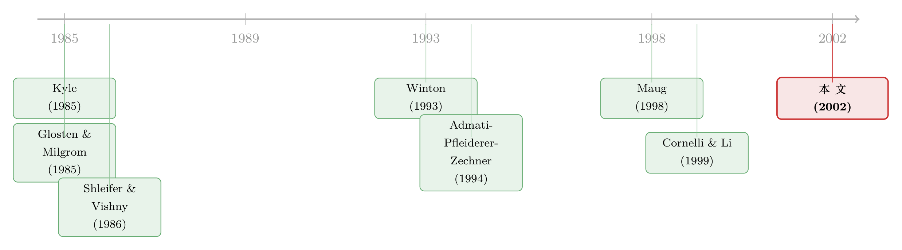

谁来盯着老板？答案藏在「他买了多少」里
本文读的是 Noe (2002, Review of Financial Studies)：当多个「战略投资者」既能监督管理层、又能在匿名市场上买卖股票时，监督并不会被那个最大的股东垄断，反而会自发地长出一个「核心监督圈」；而且在那些选择行动的人里，持股最少的反而最激进——持股规模与积极主义之间，根本不是单调的正相关。
1 一个被「搭便车」逼到墙角的问题
公司治理里有一个几乎是教科书级别的难题：监督管理层是花钱的，但好处是所有股东一起分。
你雇人盯着老板、研究公司的业务、在股东大会上据理力争，这些成本全由你一个人扛；可一旦老板被管住、公司价值上去了，每一股都涨——包括那些躺着不动的人手里的股。更糟的是，你想多买点股来「把好处内部化」也不行：那些被动的持有者不傻，他们会把「将来会有人来监督」的预期直接打进卖价里，你刚一买，价格就涨上去了，监督的收益还没到手就被价格吃掉。再加上美国 1934 年证券法第 16(b) 条、ERISA 的审慎人规则等一堆法律对大额持股的限制，结论似乎顺理成章：
如果监督真会发生，那也只会由唯一一个、足够大的外部股东来做。
Shleifer 和 Vishny (1986) 以降的一大批文献，差不多就是顺着这个逻辑展开的。可现实偏偏不买账。Warren Buffett、LENS 基金、CalPERS 这些「关系型投资者」（relationship investing）干的事，恰恰是先买一笔中等规模的股票，再去「锲而不舍地骚扰管理层换个更好的战略」（《经济学人》1997 年这么形容 LENS）。监督，明明是由一群中等体量的股东在做，而不是某一个巨无霸。
于是一个自然的问题冒出来了：在搭便车、价格泄密、法律设限这三重障碍下，这种「多人分头监督」的策略，凭什么还能活下去？
这篇文章给的答案，漂亮得有点反直觉：正因为这些投资者既能监督、又能交易，监督才得以分散；而能不能在交易里赚到钱，恰恰要求监督本身必须是「猜不透」的。
2 把治理塞进一个微观结构模型
Noe 的做法，是把公司治理直接焊进一个标准的微观结构（market microstructure）框架里——这正是他区别于前人的第一步。
设定很干净。一个两期经济，\(t = 0, 1\)。有 \(N\) 个战略投资者（strategic investors），他们有监督管理层的能力；还有一批非战略的流动性投资者（liquidity investors），只因流动性需求而交易；外加一个做市商、一家公司、一个经理人。
公司的价值由监督决定，而且是个极端的 0/1 结构：
- 没有任何一个股东监督——经理人把公司价值全部转移进自己的口袋，每股价值变成 \(0\)；
- 只要至少一个股东监督——这种侵占被挡住，每股价值就是 $\$1$。
每个选择监督的人，要付一笔固定成本 \(c\)。注意这里的两个刻意假设：监督只需一人即可生效（不存在「人多力量大」的规模效应），且所有人监督成本相同。Noe 解释得很坦白——如果让监督需要多人协作、或让大股东监督成本更低，那「小股东也来分担监督」这个结论就会被监督技术本身「送」出来，反而看不清真正想讲的金融市场结构的作用。他要的，是一个除了市场结构之外什么都不偏袒的环境。
接着，关键的决策来了。设投资者 \(i\) 在交易后持有 \(\theta_i\) 股，令 \(v_{-i}\) 表示他对「自己不监督时，股票仍能值 $\$1$ 的概率」的猜想（也就是别人去监督、把公司救下来的概率）。那么 \(i\) 监督的条件是：
$$\theta_i - c > \theta_i\, v_{-i}$$
左边是监督的回报（持股都值 $\$1$，减去成本 \(c\)），右边是不监督的回报（持股按猜想的价值 \(v_{-i}\) 计）。整理一下就是 \(\theta_i\,(1 - v_{-i}) > c\)：持股越多、或越觉得「没人会替我监督」，就越该自己上。
3 真正关键的一步：监督必须「猜不透」
到这里，故事还只是个普通的监督模型。真正让它转起来的，是下面这一步。
战略投资者并不像经典内幕交易模型里那样天生握有私人信息。他们的私人信息，是用自己的行动生产出来的——具体说，就是「我这一轮到底监不监督」。问题是，要靠这个信息在市场上赚钱，监督就不能被预期到。
为什么？因为做市商（Bertrand 竞争、风险中性、零利润）会盯着订单流定价。如果大家都知道某人铁定会监督，那么「公司一定值 $\$1$」这件事就会被定进价格里，他买股票时就得按 $\$1$ 付钱，监督的收益又一次在价格里蒸发。要想在买入时占到便宜，就得让做市商没法确定这一轮会不会被监督。
于是结论只能是：均衡里的监督必须是随机的（stochastic monitoring）——投资者要用混合策略，时而监督、时而不监督。而一个人愿意去随机化（即对监督与否无差异），前提是上面那个监督条件在边际上恰好取等号：
$$\theta_i - c = \theta_i\, v_{-i} \quad\Longrightarrow\quad v_{-i} = 1 - \frac{c}{\theta_i}$$
这个不起眼的等式，是整篇文章的发动机。我们把它拆开来标注一下：
a1 | 监督并救下公司时的回报：交易后持股 θ_i，每股值 \$1 a2 | 监督的固定成本 c（只有亲自监督的人才付） a3 | 不监督时的回报：持股 θ_i 乘以「别人会替我监督」的猜想概率 v_{-i}
4 于是反转出现：越大的股东，监督越少
现在把这个等式当成均衡条件来读，反转就出现了。
无差异要求 \(v_{-i} = 1 - c/\theta_i\)。注意 \(v_{-i}\) 是投资者 \(i\) 对「别人的监督力度」的猜想——而它随 \(\theta_i\) 单调递增：持股 \(\theta_i\) 越大的人，要愿意「有时不监督」，就必须相信别人监督得足够多（\(v_{-i}\) 足够高），否则他持有的那一大堆股票太值钱，他根本舍不得放弃监督。
而在均衡里，猜想必须正确。既然大股东必须猜「别人监督得多」，那就意味着——从别人的视角看——大股东自己监督得少。把所有人的条件拼在一起，逻辑闭环只有一种解：
持有初始股份最多的那个战略投资者，在均衡里监督得最少；而在所有选择行动的人当中，持股最小的那批反而最激进。对于「边缘监督者」，积极主义强度与初始持股成反比。
这就推翻了「监督由唯一大股东垄断」的传统图景。Noe 把行动者分成了三层：
- 核心监督者（core monitors）：监督概率最高。他们「voice」（监督）和「exit」（在不监督时卖出获利）两手都硬——所以预期卖出活动与预期积极主义正相关。在这个意义上，「用手投票」和「用脚投票」对他们而言是互补而非替代的策略。
- 边缘监督者（fringe monitors）：监督时会买，但买卖价差（bid-ask spread）把他们挡在了「卖出」这一侧之外。
- 被动者：最小的那些股东，既不监督也不交易——监督的资本利得抵不过成本 \(c\)，而因为不监督就拿不到那份私人信息，进市场反而要承担逆向选择成本。
（关于机构投资者在治理动荡期既监督、又积极交易这一经验事实，可参见 Parrino、Sias 和 Starks 那篇被本文反复引用的工作，我写过《用脚投票：被炒掉的 CEO 背后，是谁先悄悄离场》。）
5 价格里的逆向选择，与一个反直觉的比较静态
做市商怎么定价？这里 Noe 走的是 Glosten 和 Milgrom (1985) 的逆向选择路子。Bertrand 竞争把做市商的买、卖两侧利润都压成零，得到均衡卖价（Lemma 1）：
$$p_A^* = 1 - (1 - v^*)\,\frac{E[D_B^* \mid I_M^* = 0] + L_B}{E[D_B^*] + L_B}$$
其中 \(v^*\) 是均衡每股价值，\(D_B^*\) 是战略投资者的买方美元需求，\(L_B\) 是预期买方流动性需求，\(I_M^*\) 是「是否有人监督」的指示变量。直觉是：卖价从 $\$1$ 往下打的折扣，取决于「在没人监督的坏状态下买盘占了多大比重」——知情买盘越脏，做市商越要拉宽价差自保。
有了价格，就能做比较静态。其中最值得玩味的一条，是战略持股与买卖价差的关系。标准微观结构模型会预测：战略（知情）投资者相对流动性投资者越多，价差越大——Kini 和 Mian (1993) 还专门拿这个去做了检验。但 Noe 的第 4 节告诉你，战略持股上升对价差的影响可正可负：
- 一方面，知情交易量上升，价差该变大（符合直觉）；
- 另一方面，战略持股越高，最优监督水平越高，产出的不确定性被压低，战略投资者的交易利润随之下降，做市商收的价差反而变窄。
两股力量对冲，关系就不再单调。这条结论的含义很尖锐：Kini-Mian 那种「没找到战略持股与价差的单调关系」的检验结果，并不能当作「战略交易在塑造市场结构上不重要」的证据——单调性本来就不该成立。
6 文献脉络
把这篇文章放进坐标系里，并不容易，但它的来路是清楚的。
一条线是公司治理里的「大股东监督」传统：Shleifer 和 Vishny (1986) 奠定了「大股东解决搭便车」的基本图景，Admati、Pfleiderer 和 Zechner (1994) 把大股东积极主义与风险分担、市场均衡接上，Maug (1998) 则点出流动性与控制之间的权衡，Kahn 和 Winton (1998) 讨论持股结构、投机与股东干预。另一条线是微观结构：Kyle (1985) 的策略性知情交易，与 Glosten 和 Milgrom (1985) 的逆向选择定价，构成了价格形成的底座。
本文最近的两个邻居，是 Winton (1993) 和 Cornelli 与 Li (1999)。和 Winton 一样，本文允许多人监督、且监督能改善业绩；但 Winton 假设内部人为清仓付一笔外生的流动性成本，而 Noe 把这份流动性成本内生地从微观结构里生产出来。和 Cornelli-Li 一样，本文的战略交易者靠自己行动生产出来的私人信息获利——只不过那里的信息是套利者「知道自己在场」，这里是「我自己的监督策略」。Noe 与两者的两点根本区别在于：他的投资者(a) 能同时站在买、卖两侧，(b) 拥有异质的初始禀赋——而正是这份异质性，被翻译成了均衡监督行为的差异。

7 评论与延伸（Q&A + 研究方向）
(a) 几个可能的疑问
Q：监督的「随机性」是真实行为，还是纯粹的建模技巧？
它是被均衡逼出来的，不是为了好算。核心约束是：要靠监督在市场上赚钱，监督就不能被做市商预期到；可一旦确定性地监督，价格就会把收益吃光。所以混合策略（随机监督）是赚取交易利润的必要条件，而非数学方便。这正是本文与「私人信息和不确定性外生给定」那类模型的根本分野。
Q：「持股越多监督越少」难道不荒谬吗？大股东不是更有动力吗？
单看监督激励，大股东确实更有动力——条件 \(\theta_i(1-v_{-i})>c\) 里 \(\theta_i\) 越大越想监督。反转来自均衡的一致性：要让大股东愿意混合（有时不监督），他必须相信别人监督得足够多（\(v_{-i}=1-c/\theta_i\) 随 \(\theta_i\) 递增）；而猜想在均衡里必须正确，于是大股东事实上监督得少。这是个一般均衡结论，不是单个人的最优。
Q：这和「用脚投票 vs. 用手投票」的经典对立有什么不同？
经典叙事里 exit（卖出）和 voice（监督）是替代品：不满意就走人，否则就留下抗争。本文给出的是互补：核心监督者恰恰最可能在「这轮不监督」时卖出获利，所以预期卖出与预期积极主义正相关。买方积极主义和卖方交易如何捆在一起，是全文的焦点之一。
Q：那条「战略持股与价差可正可负」的结论，是不是在为坏的实证结果开脱？
不算开脱，而是指出检验的零假设错了。增加战略持股有两个相反效应：知情交易量↑（价差↑）与最优监督↑、产出不确定性↓（价差↓）。既然理论本身预测非单调，那么实证里找不到单调关系，就不能反推「战略交易不重要」。它是把一个被误设的检验纠正过来。
Q：0/1 的公司价值、单人即可监督——这些极端假设会不会驱动了结论？
作者特意挑了最不利于自己的设定：监督无规模经济、成本同质、一人即可生效。目的就是把「小股东也来分担监督」这个结果完全归给金融市场结构，而不是监督技术。第 5 节进一步放松了流动性需求内生、监督技术、成本不确定、多公司目标等，称核心结论不被推翻。
Q：模型对买卖价差「挡住边缘监督者卖出」这一点，经验上可检验吗？
原则上可以。它预言：积极主义强度更高的投资者，其卖出行为对买卖价差更敏感；且核心监督者的「卖出」与「监督」在时间上正相关。用 13D/13F 持仓变动配上个股流动性，是可以去触碰的——尽管把「监督意图」干净地从普通调仓里剥出来很难。
(b) 几个可能的研究问题与提案
1. 把模型搬到公司债持有人身上。 【经济故事】债权人也监督，也在二级市场交易；契约违约时控制权转移给债权人，「voice」的形态完全不同于股东。本文「交易能力如何塑造监督分散」的逻辑，在信用市场可能有镜像版本。【可行性】中。需要 TRACE 的债券成交 + 机构债券持仓（如 eMAXX/保险公司 NAIC 申报），识别上可借「债券流动性的横截面差异」做工具。难点是监督在债市更隐蔽。
2. 外资持有人是「核心」还是「边缘」？ 【经济故事】外资常被认为信息劣势、更被动；但本文框架下，「被动」是禀赋与价差共同决定的内生选择，而非天生。若外资面临更宽的价差和更高的逆向选择成本，模型预测他们更可能落入「边缘」甚至「被动」层。【可行性】中高。可用韩国/台湾这类有逐笔身份标识的市场（与我之前读到的首尔交易簿证据同源数据），把外资的「买入—不卖出」不对称与价差挂钩检验。
3. 流动性冲击如何重排「核心—边缘」结构？ 【经济故事】本文里买卖价差是把边缘监督者挡在卖出侧的关键阀门。那么一次外生的流动性枯竭（价差骤宽）应该会改变谁愿意监督、谁退场。【可行性】中。可用 2008 或 2020 年 3 月的流动性危机做事件窗口，看机构在治理事件（代理投票、CEO 更替）上的参与是否随价差扩大而系统性收缩。识别靠危机的外生性。
4. 「核心圈」的内生形成与持仓集中度。 【经济故事】模型预言核心监督者既不是最有钱、也不是持股最大的那位。这与「谁在替谁监督」的实证（参见《替你盯着老板的人，自己也是个老板》）能对话：积极主义的强度应在中等持股区间最高，呈非单调。【可行性】高。13F + 积极主义事件（13D、proxy fight）数据现成，直接检验「积极主义—持股规模」的非单调形态即可。
8 我的判断
这是一篇「把两个本来分开讲的故事强行焊在一起、却焊得很漂亮」的理论文章。它最大的贡献，是指出监督的可交易性本身会重塑监督的分布：一旦你承认积极投资者也要靠交易赚钱，那么「监督不能被预期」这条约束，就会通过随机化和均衡一致性，把监督从单一大股东手里摊给一群中等体量的投资者，并让 voice 与 exit 从替代变成互补。这对「大股东垄断监督」的标准直觉是一记干净的反击，也为现实中 LENS、CalPERS 式的关系投资提供了一个内部自洽的理论基础。
对它的保留也很清楚。第一，结论高度依赖那个极端的 0/1 价值结构与「一人监督即可」的设定——作者诚实地承认，正是为了把功劳归给市场结构才这样设；但这也意味着，一旦监督存在哪怕轻微的互补性或规模经济，「小股东分担监督」里有多少来自市场结构、多少来自技术，就会重新变得纠缠。第二，全文是纯理论，那些漂亮的比较静态（尤其是「战略持股与价差非单调」）至今缺少与之严格对齐的结构化实证检验——它更像是给实证者出了一道题，而不是关上了一扇门。
我最想看到的后续，是有人拿逐笔身份数据，去把「核心—边缘—被动」这个三层结构和「买入—不卖出」的不对称，真正量出来——尤其是在公司债和外资持有人这两个本文没碰、但逻辑天然适用的场景里。
参考文献
- Admati, A., P. Pfleiderer, and J. Zechner (1994). Large Shareholder Activism, Risk-Sharing, and Financial Market Equilibrium. Journal of Political Economy 102, 1097–1130.
- Cornelli, F., and D. Li (1999). Risk Arbitrage in Takeovers. Working paper, London Business School.
- Glosten, L., and P. Milgrom (1985). Bid, Ask and Transaction Prices in a Specialist Market with Heterogeneously Informed Traders. Journal of Financial Economics 14, 71–100.
- Kahn, C., and A. Winton (1998). Ownership Structure, Speculation, and Shareholder Intervention. Journal of Finance 53, 99–129.
- Kini, O., and S. Mian (1993). Bid-Ask Spreads and Ownership Structure. Journal of Financial Research 18, 401–414.
- Kyle, A. (1985). Continuous Auctions and Insider Trading. Econometrica 53, 1315–1335.
- Maug, E. (1998). Large Shareholders as Monitors: Is There a Tradeoff Between Liquidity and Control? Journal of Finance 53, 65–98.
- Noe, T. H. (2002). Investor Activism and Financial Market Structure. Review of Financial Studies 15(1), 289–318.
- Parrino, R., R. Sias, and L. Starks (2000). Voting with Their Feet: Institutional Investors and CEO Turnover. Working paper, University of Texas.
- Shleifer, A., and R. Vishny (1986). Large Shareholders and Corporate Control. Journal of Political Economy 94, 461–488.
- Winton, A. (1993). Limitation of Liability and the Ownership Structure of the Firm. Journal of Finance 48, 487–512.